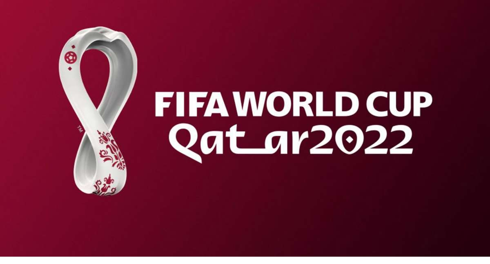

Qatar Football Stadiums & Team Groups

The 2022 FIFA World Cup is scheduled to be the 22nd running of the
FIFA World Cup competition, the quadrennial international men's football championship contested by the senior
national teams of the member associations of FIFA.
It is scheduled to take place in Qatar from 21 November 2022 to 18 December 2022.😀
List of Stadiums in Qatar
Group Stages
| Group A |
Group B |
Group C |
Group D |
| Qatar |
England |
Argentina |
France |
| Ecuador |
IR Iran |
Saudi Arabia |
Australia |
| Senegal |
USA |
Mexico |
Denmark |
| Netherlands |
Wales |
Poland |
Tunisia |
| Group E |
Group F |
Group G |
Group H |
| Spain |
Belgium |
Brazil |
Portugal |
| Costa Rica |
Canada |
Serbia |
Ghana |
| Germany |
Morocco |
Switzerland |
Uruguay |
| Japan |
Croatia |
Cameroon |
Korea Republic |